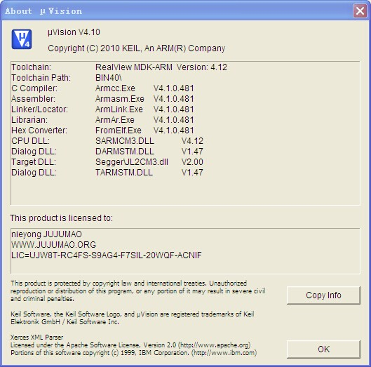
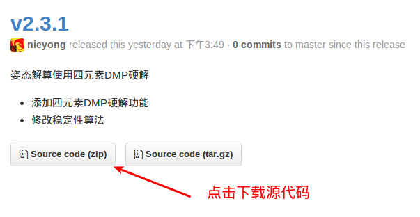
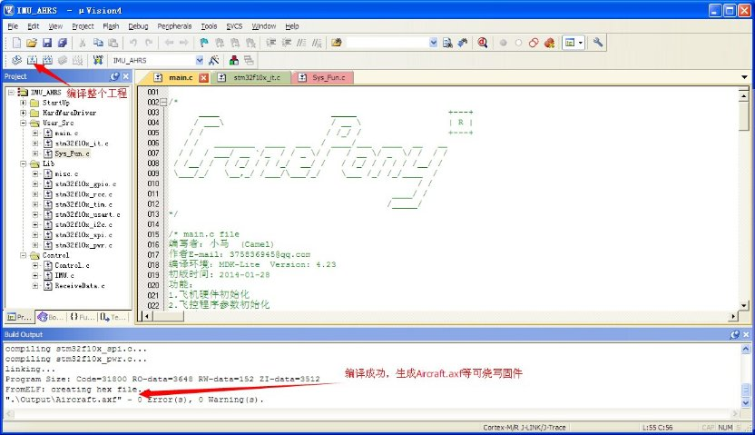

Windows下開發環境搭建-裸機版本
IDE開發工具Keil v5.12下載地址：Crazepony百度雲網盤Keil-uVision4-MDK4-12.zip
IDE開發工具Keil v4.10下載地址：Crazepony百度雲網盤Keil-uVision4-MDK4-12.zip。
裸機飛控源代碼下載地址：Github項目[crazepony-firmware-none](https://github.com/Crazepony/crazepony-firmware-none/releases）。
cp2102驅動及isp燒錄工具下載地址：Crazepony百度雲網盤開發工具
環境配置說明
裸機版本是指沒有使用RTOS的主控固件版本,由於沒有使用RTOS，程序代碼顯得更加簡單明瞭，開發環境配置簡單，適合初學者使用。
裸機版本的代碼使用Keil進行開發編譯，下面介紹編譯環境的搭建和編譯過程。在crazepony 5.1版本及以前，使用keil 4.10進行開發。但是由於其不支持utf-8編碼，所以從5.1版本之後都會使用keil 5.10版本進行開發。
將crazepony-firmware-none代碼按照鏈接下載，下載後將代碼壓縮包解壓在一個文件夾，如下圖所示：
以Keil 5為例，點擊Project欄目下Open project，打開代碼解壓所在文件夾選中Crazepony.uvproj，此時已將代碼項目工程所有文件導入Keil 5，如圖所示：
如果對crazepony開源的代碼有興趣，可以打開Project目錄欄查看源碼的相關算法（再次鄭重聲明，開源代碼只提供學習使用，不得商業使用）。代碼工程導入後，可以對工程進行編譯、調試及燒錄，燒錄代碼在此介紹一種比較簡單的方法，採用isp下載，操作簡單，只需要裝載cp2102驅動及一根miniusb數據線即可。燒錄界面如圖所示 ,在此說明一點，在選擇RTS和DTR的用法時，經過測試選擇以下五種模式均可行
RTS高電平復位，DTR高電平進Bootloader
DTR高電平復位，RTS低電平進Bootloader
DTR低電平復位，RTS低電平進Bootloader
DTR低電平（<3V）復位，不用RTS
*不使用RTS和DTR
,在此說明一點，在選擇RTS和DTR的用法時，經過測試選擇以下五種模式均可行
RTS高電平復位，DTR高電平進Bootloader
DTR高電平復位，RTS低電平進Bootloader
DTR低電平復位，RTS低電平進Bootloader
DTR低電平（<3V）復位，不用RTS
*不使用RTS和DTR
Keil 4的安裝和破解
由於主控使用的是ARM Cortex-M3內核的STM32，所以必須使用帶有ARM編譯工具鏈的Keil 4。網絡上很多隻有幾十兆大小的的Keil 4可能只支持C51開發。Crazepony百度雲網盤提供帶有ARM編譯工具鏈的Keil 4安裝文件下載，帶有破解註冊機和破解說明文檔。用戶自行下載安裝，可以看到該Keil版本為v4.10。

該安裝文件在Windows XP，32位系統上測試通過。已知存在的問題：
- 不支持utf-8編碼。utf-8編碼的中文在Keil 4下面會顯示為亂碼，所以這部分固件代碼沒有使用utf-8編碼。沒有找到能夠配置支持utf-8的地方，很可能是Keil版本比較老，或者破解導致無法支持utf-8編碼。
源代碼下載
主控固件裸機版本，裸機指沒有使用實時操作系統RTOS。由於沒有使用RTOS，所以代碼更加簡單明瞭，適合初學者使用。
Crazepony項目是開源的，所有代碼都託管在Github的Crazepony項目下。裸機源代碼放置在crazepony-firmware-none下，命名中的none表示不使用RTOS。
可以直接使用git獲得源代碼，也可以從crazepony-firmware-none release下載各個版本的裸機源代碼。

源代碼導入和編譯
在源代碼中，有三個文件為Keil工程文件。
IMU_AHRS.uvopt
IMU_AHRS.uvproj
IMU_AHRS_IMU_AHRS.dep
使用上面安裝的Keil 4打開文件IMU_AHRS.uvproj，就能夠導入整個工程。如下圖所示。

點擊左上角的編譯按鈕，編譯整個項目，在工程下生成Output目錄，目錄中aircraft.hex就是可以燒寫到STM32的固件。參考另外一篇文章《主控固件燒寫》將固件寫入STM32中。